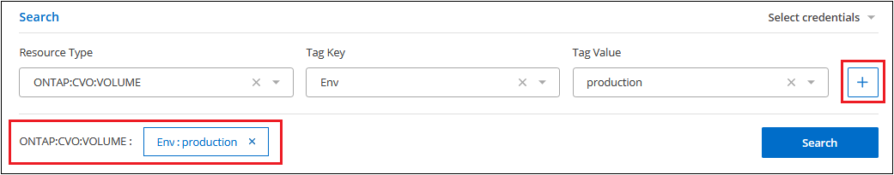
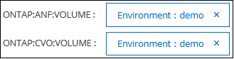

入门
入门
管理资源的标记
 建议更改
建议更改
您可以使用BlueXP标记服务查看、添加、修改和删除分配给现有资源的标记。这样，您就可以组织和简化资源管理。
搜索具有特定标记的资源
如果要查看具有特定标记或特定标记和标记键值的所有资源，可以搜索这些标记。您可以搜索所有资源，也可以仅搜索某些资源类别。
-
选择*运行状况>修复*、然后单击*标记*选项卡。
-
如有必要，请在 * 选择凭据 * 字段中选择特定云提供商的凭据。
-
在 Resource Type 字段中，选择资源，例如 * ONTAP ： CVO ： volume* 以搜索所有 Cloud Volumes ONTAP 卷。
-
在 Tag Key 字段中，选择标记，例如 * Env* ，以将搜索限制为带有 "Env" 标记的卷。
-
在 Tag value 字段中，选择键值，例如 * 生产 * ，以将搜索范围限定为标记名称为 "Env" 且标记值为 "production" 的卷。

-
单击
 将此搜索条件添加到搜索区域。
将此搜索条件添加到搜索区域。
-
如果完成了搜索，请单击 * 搜索 * ，搜索结果将显示在 "Resources" 部分中。

如果要添加其他搜索条件，请再次执行步骤 3 到 6 ，然后单击 * 搜索 * 。
搜索规则
定义搜索时，请遵循以下规则：
-
选择资源类型后，如果要列出具有任何密钥和任何密钥值的所有资源，可以将标记密钥字段和标记值字段留空。
-
您可以选择单个搜索，也可以在 " 资源 " 部分定义多个搜索以细化结果。
-
定义多组搜索条件时：
-
如果两次搜索的条件适用于不同的资源类型，则此操作将被视为 " 或 " 操作，并且结果将显示这两次搜索中的资源。例如，以下搜索将返回具有 "Environment ： dema" 标记值的所有 Azure NetApp Files 卷以及具有 "Environment ： dema" 标记值的所有 Cloud Volumes ONTAP 卷。

-
如果两次搜索的条件是针对同一资源类型，则此操作将被视为 " 和 " 操作，并且结果仅显示与 * 两次 * 搜索匹配的资源。例如，以下搜索将返回同时具有 "Environment ： dema" 标记值和 "Group ： Finance" 标记值的 Azure NetApp Files 卷。

-
-
如果您定义了多个搜索条件，然后决定删除一个，只需单击
 以将其从搜索区域中删除。
以将其从搜索区域中删除。
向现有资源添加标记
您可以将标记应用于单个资源或多个资源。这些资源可能具有现有标记或没有当前标记。
-
从 * 标记 * 选项卡中，创建搜索条件并单击 * 搜索 * 。
-
选择要标记的一个或多个资源。
-
要选择页面上的所有资源，请选中标题行（
 ）。
）。 -
要选择多个资源，请选中每个资源对应的框（
 ）。
）。 -
要选择单个资源，请单击 资源图标。

-
-
单击 * 管理标记 * ，此时将显示 _Resource Tags 对话框。任何现有标记将显示在此对话框中。

-
单击 * 添加新标记 * ，此时对话框中将显示一个空白的标记密钥和标记值行。
-
输入标记密钥和标记值。如果要在此资源上添加更多标记，请此时添加更多标记，然后单击 * 审阅并应用 * 。
-
如果在 review 页面中所做的更改看起来正确，请单击 * 保存 * ，此时新标记将添加到资源或所有选定资源中。
更改资源的标记值
您可以更改分配给资源的标记，也可以更改应用于现有标记的标记值。
-
从 * 标记 * 选项卡中，创建搜索条件并单击 * 搜索 * 。
-
选择要更改标记的一个或多个资源。
-
单击 * 管理标记 * ，此时将显示 _Resource Tags 对话框。

-
为标记值输入一个新值，然后单击 * 审阅并应用 * 。
-
如果您在 review 页面中所做的更改看起来正确，请单击 * 保存 * ，此时将更改资源或所有选定资源的标记值。
从资源中删除标记
您可以从单个资源或多个资源中删除标记键 / 值对。
-
从 * 标记 * 选项卡中，创建搜索条件并单击 * 搜索 * 。
-
选择要从中删除标记的一个或多个资源。
-
单击 * 管理标记 * ，此时将显示 _Resource Tags 对话框。

-
单击
 对于要删除的标记键 / 值对，该行将被删除，然后单击 * 审阅并应用 * 。
对于要删除的标记键 / 值对，该行将被删除，然后单击 * 审阅并应用 * 。 -
如果您在 review 页面中所做的更改看起来正确，请单击 * 保存 * ，标记键 / 值对将从资源或所有选定资源中删除。